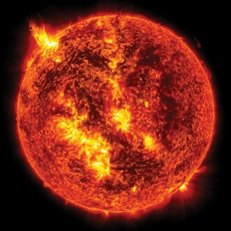
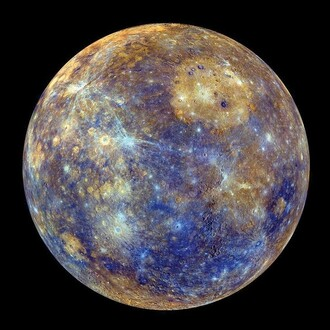
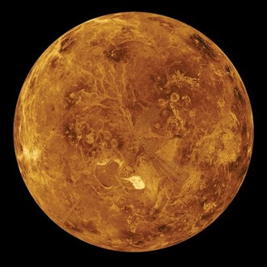
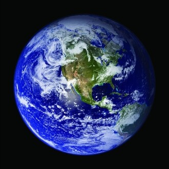
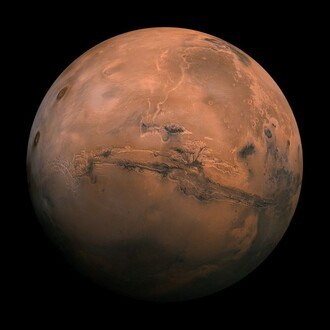
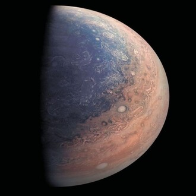
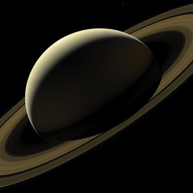
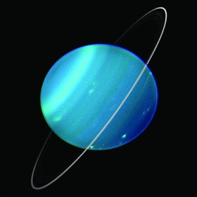
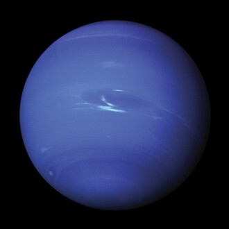

-
The Sun
The Astro
The Sun is a yellow dwarf star, located at the center of our Solar System. It is the largest source of energy for the Earth and the other planets, and is responsible for several climatic and atmospheric phenomena.
-
Mercury
The Smallest
Mercury is the closest planet to the Sun, orbiting at an average distance of 58 million kilometers. Intense heat: Despite being small, Mercury faces extreme temperatures due to its proximity to the Sun. Craters: The surface of Mercury is covered with impact craters, witnesses of collisions with asteroids and comets.
-
Venus
The Burning Planet
Thick atmosphere: Venus has a thick, hot atmosphere, composed mainly of carbon dioxide. Greenhouse effect: The thick carbon dioxide atmosphere traps the Sun's heat, making Venus the hottest planet in the Solar System. Volcanic landscapes: The surface of Venus is marked by volcanoes and intense tectonic activity.
-
Earth
The Blue Oasis
A blue planet: Earth is the only known planet with liquid water on its surface, which is why it is home to life. Protective atmosphere: Earth's atmosphere protects life from harmful solar radiation and regulates the planet's temperature. Diversity: Earth has an incredible variety of life, from the smallest microorganisms to the largest whales.
-
Mars
The Red Planet
Rocky surface: The surface of Mars is covered in rocks and dust, with landscapes that resemble terrestrial deserts. Polar caps: Mars has polar caps composed of water ice, indicating the presence of water in the past. Search for life: Mars is a focus of research in the search for extraterrestrial life, due to its similarity to Earth in some aspects.
-
Jupiter
The Gas Giant
Giant planet: Jupiter is the largest planet in the Solar System, with a diameter 11 times that of Earth. Gaseous composition: Jupiter is composed mainly of hydrogen and helium, and has a turbulent atmosphere with gigantic storms. Numerous moons: Jupiter has 79 known moons, some large enough to be considered dwarf planets.
-
Saturn
The Lord of the Rings
Famous rings: Saturn is known for its rings, made up of millions of tiny particles of ice and rock. Gas planet: Like Jupiter, Saturn is a gas giant, composed mainly of hydrogen and helium. Moon Titan: Saturn has 82 moons, Titan being the largest of all, with a dense atmosphere rich in nitrogen.
-
Uranus
The Ice Giant
Tilted: Uranus has an extreme axial tilt, causing its poles to point almost sideways. Icy atmosphere: Uranus' atmosphere is mainly composed of hydrogen, helium and methane, which gives it a blue-green color. 27 moons: Uranus has 27 known moons, some with irregular orbits and retrograde rotation.
-
Neptune
The Distant Giant
Farthest planet: Neptune is the farthest planet from the Sun, orbiting at an average distance of 4.5 billion kilometers. Strong winds: Neptune has the strongest winds in the Solar System, with speeds that can reach 2,000 km/h. 14 moons: Neptune has 14 known moons, Triton being the largest of them, with geological activity similar to that of Enceladus, a moon of Saturn.